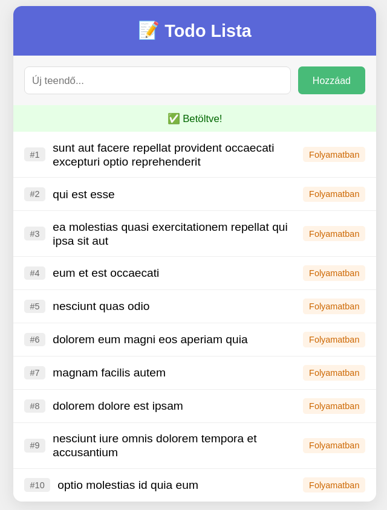

AJAX és a Fetch API – Szerverkommunikáció JavaScriptben
Bevezetés: Miért van erre szükség?
Az előző leckében megtanultuk, hogyan küldjük el az űrlapokat a szerverre. De mi történik ilyenkor? Az egész oldal újratöltődik!
Gondolj arra, amikor a Facebookon görgetés közben új posztok jelennek meg, vagy amikor a Google már gépelés közben javaslatokat mutat. Ezek a funkciók nem töltik újra az oldalt – ez az AJAX lényege.
Mi az AJAX?
Az AJAX (Asynchronous JavaScript and XML) egy megközelítés, ami lehetővé teszi adatok küldését és fogadását a háttérben:
- Asynchronous (Aszinkron): A kérés a háttérben fut, nem blokkolja az oldalt.
- JavaScript: A böngészőben futó kód küldi és fogadja az adatokat.
- JSON: Az adatformátum, amiben a szerver válaszol (régen XML volt, ma JSON).
A fetch() API
A modern JavaScriptben a fetch() függvényt használjuk szerverkommunikációra, az async/await szintaxissal.
Alapszintaxis
async function adatokLetoltese() {
try {
const response = await fetch(url); // Várunk a szerver válaszára
const data = await response.json(); // JSON-né alakítjuk
console.log(data); // Feldolgozzuk az adatokat
} catch (error) {
console.error("Hiba:", error); // Hiba esetén ide kerül
}
}
Hogyan működik?
async function– Jelzi, hogy a függvény aszinkron műveleteket tartalmaz.await fetch(url)– Elindít egy kérést és megvárja a választ.await response.json()– A szerver válaszát JSON-né alakítja.try/catch– Hiba esetén (pl. nincs internet) acatchágba kerül.
A JSONPlaceholder API
A gyakorlathoz a JSONPlaceholder API-t használjuk – ez egy ingyenes, nyilvános "teszt szerver", ami szintetikus adatokat ad vissza.
Alap URL: https://jsonplaceholder.typicode.com
| Végpont | Mit ad vissza? |
|---|---|
/todos |
Teendők listája |
/posts |
Blog bejegyzések |
/users |
Felhasználók |
Note
A JSONPlaceholder egy szimulált API. A POST kérések "működnek" (visszaadják a várt választ), de nem módosítják ténylegesen az adatbázist. Ez tökéletes tanuláshoz!
Gyakorlat: Todo Alkalmazás
Építsünk egy egyszerű teendő-listát, ami:
- Betölti a teendőket a szerverről (GET)
- Új teendőt küld a szerverre (POST)

1. lépés: HTML váz
<!DOCTYPE html>
<html lang="hu">
<head>
<meta charset="UTF-8">
<meta name="viewport" content="width=device-width, initial-scale=1.0">
<title>Todo App</title>
<style>
</style>
</head>
<body>
<div class="container">
<header>
<h1>📝 Todo Lista</h1>
</header>
<!-- Új teendő űrlap -->
<form class="add-form" id="add-form">
<input type="text" id="new-todo" placeholder="Új teendő..." required>
<button type="submit">Hozzáad</button>
</form>
<!-- Státusz jelző -->
<div id="status"></div>
<!-- Teendők listája -->
<ul id="todo-list">
<!-- IDE KERÜLNEK A TEENDŐK -->
</ul>
</div>
</body>
</html>
2. lépés: Adatok lekérése (GET)
Kérjük le a teendőket a szerverről és jelenítsük meg őket!
// API cím
const API_URL = "https://jsonplaceholder.typicode.com/todos";
// DOM elemek
const todoList = document.getElementById("todo-list");
const statusDiv = document.getElementById("status");
// Státusz üzenet megjelenítése
function showStatus(message, type) {
}
// Egy teendő HTML-jének létrehozása
function createTodoHTML(todo) {
}
// Teendők betöltése a szerverről
async function loadTodos() {
}
// Indítás
loadTodos();
3. lépés: Új teendő küldése (POST)
Most tegyük lehetővé új teendők hozzáadását!
// Űrlap elemek
const addForm = document.getElementById("add-form");
const newTodoInput = document.getElementById("new-todo");
// Új teendő küldése a szerverre
async function addTodo(title) {
}
// Űrlap beküldése
addForm.addEventListener("submit", function(event) {
});
A POST kérés felépítése
const response = await fetch(url, {
method: "POST", // HTTP metódus
headers: {
"Content-Type": "application/json" // JSON-t küldünk
},
body: JSON.stringify({ // Az adat JSON stringként
title: "Bevásárlás",
completed: false
})
});
Warning
A body-ban mindig JSON.stringify()-t kell használni! A fetch() nem tudja automatikusan átalakítani az objektumot.
Összefoglaló
| Művelet | HTTP metódus | fetch() használat |
|---|---|---|
| Adatok lekérése | GET |
await fetch(url) |
| Új adat küldése | POST |
await fetch(url, { method: "POST", body: ... }) |
Az async/await működése
async function → await fetch(url) → await response.json() → feldolgozás
↓ ↓ ↓ ↓
Aszinkron fv. Kérés + várakozás JSON parse Megjelenítés
Fontos tudnivalók
async function– Jelzi, hogy a függvénybenawait-et használunk.await– Megvárja, amíg a művelet befejeződik.try/catch– Hibakezelés (pl. nincs internet).event.preventDefault()– Megakadályozza az oldal újratöltését.JSON.stringify()– Objektumot JSON stringgé alakít (POST-nál kötelező).